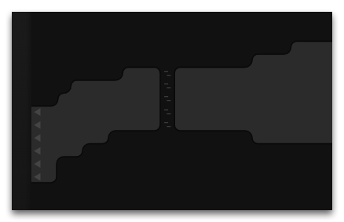
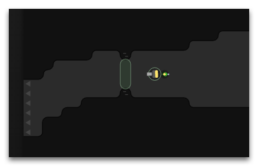
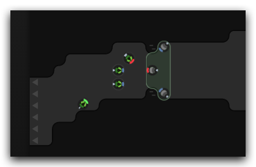

The world of Screeps is not the safest place on earth. This article explains what means do you have in order to protect yourself from invasions.
Safe mode
When you just start out in the game, you have Safe Mode turned on in your room. It means that no other creep will be able to use any harmful methods in this room (but you’ll still be able to defend against strangers).

Safe mode lasts for 20,000 game ticks (approx. 15 hours depending on the tick duration). However, if the room controller has extra available activations, you can turn on safe mode again using the method StructureController.activateSafeMode:
Game.rooms.W1N1.controller.activateSafeMode()A controller obtains one activation with each new level. Besides, you can add more activations to your controller with the help of the ghodium resource using the method Creep.generateSafeMode.
Safe mode is a last resort defense tactics, when everything else has failed. Besides, safe mode can be active only in one room at the same time. For more robust defense you should use walls, ramparts, towers, and creep defenders.
Passive defense: walls
The most easy and trivial way to defend your room is to build the same walls as in the initial grace period. There is a difference though: while the initial walls were right on doorways blocking outside creeps, your new walls may be built not closer than 2 squares to the room edges, and hostile creeps will still be able to enter the room and destroy your fortifications. This is why it's crucial not to just build, but also fortify your walls in such a way that it takes your opponents much time to destroy them.

After a wall is built, its square has only 1 hit point. So if you want the wall to cause any trouble to the attackers for at least several hours (or even days), you should fortify it with the help of workers and the repair action. The maximum number of hits you can repair the wall to is 300,000,000 hits. If you spend much resources, such a wall can withstand attacks for many days. And it is just a single square, while you can build multiple rows of walls!
Passive defense: ramparts
However, walls have a considerable disadvantage: they block not only hostile creeps, but your own ones too. Building walls at exits will prevent your own expansion from your room.
This is why you have another passive defense means – ramparts. They behave like walls for hostile creeps by blocking their movements, while your creeps can freely pass through them. Furthermore, a creep on a rampart square is completely invulnerable for any kind of attack until the rampart is destroyed. Being protected, it can still attack opponents.

In the same way as walls, ramparts are built with 1 hit point initially and need to be fortified to a needed level by workers afterwards. The maximum amount of rampart hits depends on the Room Controller level. See more about that in the article Control.
A rampart has another peculiarity: its superior defense abilities must be constantly maintained on a proper level. Every several ticks, a rampart loses its hit points, so you should assign a worker to make sure that all your ramparts stand alert and don't wear off.
Active defense: towers
While a well-designed passive defenses may withstand attacks for many days (for example, while you are offline and out of the game), they will inevitably fall sometime. This is why it's utterly important not to rely on fortifications alone but install defense systems to repel opponents when needed.

You сan use towers for active defense which are available to build starting from the room level 3. Unlike walls and ramparts, this defense means is active because using it requires energy and direct calling of the attack function. It can attack and heal creeps as well as repair structures (for example broken walls and ramparts).
The tower range covers the whole room, but the effect weakens with the distance to the target. Always place towers as close to their potential targets as possible.
Each action consumes 10 energy units, so ensure that your creeps watch over energy supplies in the tower and replenish them when needed.
Here is an example of a simple code to attack enemy creeps using towers in a room:
function defendRoom(roomName) {
var hostiles = Game.rooms[roomName].find(FIND_HOSTILE_CREEPS);
if(hostiles.length > 0) {
var username = hostiles[0].owner.username;
Game.notify(`User ${username} spotted in room ${roomName}`);
var towers = Game.rooms[roomName].find(
FIND_MY_STRUCTURES, {filter: {structureType: STRUCTURE_TOWER}});
towers.forEach(tower => tower.attack(hostiles[0]));
}
}Active defense: creeps
While towers are a handy method of active defense, it’s not an ultimate panacea against any offense. A well-secured team of creep invaders are able to withstand the attack by multiple towers at point-blank range. Countering such an attack requires a symmetrical response: creep defenders.

Since ramparts have an ability to protect everything on the same square from any damage, develop your defense system in such a way that any attacked square adjoins a creep defender covered by a rampart. But note that building them continuously, even in peacetime, is a waste of resources. It’s better to construct them quickly during a siege.
Writing AI logic for such creeps is quite complicated, but it’s the only way to protect your rooms against virtually any encroachment.
You can spawn NPC invader creeps in your room in order to test your defences.
Therefore, designing good fortification system with proper behaviour logic will make your room a very difficult target for invaders. However, never rest on your laurels by hunkering down in your rooms. As we know, the best defense is offense.